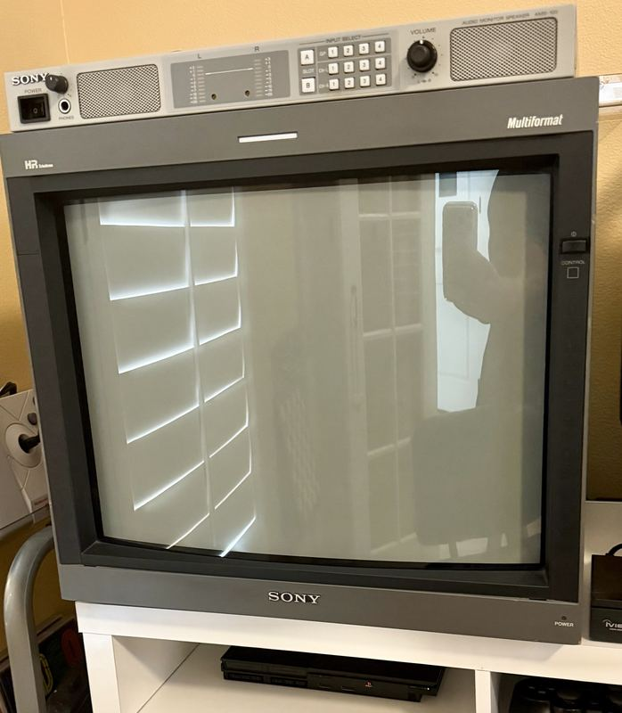

What to Check Before
You Buy a PVM-20L5
Ask around the hobby long enough and the same monitor keeps coming back. Here is what actually matters when you are standing in front of one — and what to do about the fact that you probably should not ship it.
The PVM-20L5 arrived at the end of Sony's production-monitor line with three decades of Trinitron lessons folded into it, and the reputation it earned has not faded. The case for it is not nostalgia. It is range. This is a true multiscan chassis, locking anything from about 15 to 33.75 kHz: a Super Nintendo at 240p, a DVD player at 480p, a broadcast feed at 1080i — same glass, same effortless lock, no option card required. At 800 TV lines on a fine-pitch HR Trinitron tube with SMPTE-C phosphors, the picture is broadcast-honest. One monitor that speaks every era of video fluently is a rare thing, and it is why this one plays the bridge in this collection.
It is also twenty-odd years old, weighs about seventy-three pounds, and there is no warranty department left to call. So before money changes hands, here is the sweep.

Start with a grid
If you only get to do one thing, put a corner-to-corner geometry grid on the screen. Nothing else tells you as much as fast. Geometry and convergence are the expensive problems on a monitor like this — the ones that mean a service bench, a specialist, and a bill — and a grid puts every one of them in plain sight at once.
Look down the lines, not at them. Are the verticals actually vertical at the far left and far right, or do they bow? Is the spacing even from edge to edge, or are the boxes on one side stretched wider than the boxes on the other? Do the red, green and blue fringes separate in the corners? A little convergence drift in the extreme corners is normal on a tube this age and adjustable. Lines that bend, or a picture that is visibly wider on one side than the other, is a different conversation.
Bring your own source. A seller's hookup tells you what the seller wants you to see; a pattern you brought tells you what is there.
Then the rest of the sweep
- Full white field — purity, uniformity and blotching all show up at once. Watch the corners for color casts and the center for dimness.
- Full black in a dim room — retrace lines, glow, and a badly set screen control give themselves away instantly.
- A real 240p source — scanline structure and how cleanly it locks. This is what you are buying it for, so test it.
- Every input, one at a time — composite, S-Video, the RGB/component BNCs, and whatever is in the option slot. A dead input is easy to hide behind a working one.
- The front panel — every button and every pot. Scratchy controls and dead buttons are common and annoying.
- The plastics — bezel tabs, the handles, the vent slots. Cracks here are forever.
- The chassis and rear — rust, water staining, evidence of a hard life in a rack or a damp garage.
- How it comes up cold — ask to see it switched on from cold, then again after half an hour. Some faults only appear at one end of that.
The faults people talk about
Three problems come up whenever this monitor is discussed: the power section on the G board, horizontal linearity on early serials, and brittle plastics. Worth knowing, worth checking for — and worth being straight about where that list comes from. It is the hobby's collective experience, not this bench. The unit here has shown none of the three, and there is no reliable serial cutoff for the linearity issue that this garage can point to. Treat all three as things to look for, not as things that will happen.
The same honesty applies to 480i. This chassis has a reputation for handling 480i less steadily than the rest of its range, and you will see that repeated. The unit here does not really show it. One monitor is a thin sample and a reputation that widespread usually has something behind it, so if 480i sources are the point of your setup, put one on the screen before you commit. If your world is 240p and 480p, it is unlikely to be the thing you notice.
Judging a tube with no numbers
The 20L5 does not hand you an hours counter. There is no number to read, no total to compare, nothing to screenshot for a listing. You are judging it by eye, which sounds worse than it is once you know what you are looking at.
A tired tube tells on itself. Whites go dull and slightly warm rather than clean. The picture looks washed instead of deep, and blacks sit gray. Most tellingly, it needs help to reach normal brightness — if the screen control has been run up high just to get an ordinary picture, someone has been compensating for a tube that is giving up. Ask what the settings were before you arrived, and be suspicious of a monitor delivered with brightness and contrast already near maximum.
The card question
The 20L5 has one option slot, and what is in it changes what the monitor is worth to you. A unit that already carries the right input card is worth more than the same monitor plus that card bought separately, because the cards are their own hunt — they surface irregularly, they are priced by people who know exactly what they have, and they are the reason there is a standing entry on the wanted list here. If a listing includes a card, weigh it properly instead of treating it as a bonus.
What to pay
Bands as they look from this garage. Verify them against current eBay sold listings before you make an offer — sold, not asking, and the gap between those two is where most disappointment lives.
| Condition | Range | What that means |
|---|---|---|
| Untested or needs work | $800 – $1,400 | Sold as-is, unknown hours, or a known fault. You are buying a project and a heavy one. |
| Working, cosmetically tired | $1,500 – $2,200 | Good picture, scuffed case, no card. The honest middle of the market. |
| Clean and working, no card | $2,200 – $2,800 | Strong tube, tidy geometry, plastics intact. |
| Excellent, all original, with a good input card | $2,800 – $3,500 | The one you keep. Rare enough that the price holds. |
Do not ship it
This is the strongest opinion in this guide. Plenty of people ship these monitors and some of them arrive fine. The recommendation from here is still don't. Seventy-three pounds of glass, a heavy chassis, and a tube neck that does not forgive a hard drop is not a parcel. It is freight that happens to be shaped like a box.
The only exception worth making is a freight company that will wrap it properly and insure it for what it is actually worth — not a carrier's flat declared value, and not a seller promising they are good at packing. If those two conditions are not both met, walk away from the listing and keep looking closer to home. A monitor that arrives with a cracked bezel or a dead tube is not a bargain that went slightly wrong; it is a total loss with shipping charges attached.
Which means the real advice is simpler than it sounds: buy one you can drive to. Bring a friend, bring a moving blanket, and bring a grid.
Where to look
- Local classifieds and Marketplace — the cheapest route and the one that fits driving distance. It rewards patience and a saved search more than it rewards effort.
- The forums — KLOV, Arcade-Projects, the shmups community. Sellers who know what they have, describe it accurately, and understand why you want to collect it in person.
- eBay, filtered to local pickup only — eBay's reach without eBay's shipping risk. Sort by distance and check it often.
- Broadcast and AV liquidations — station cleanouts, production house closures, university AV departments. Where these came from originally, and still the best odds on a unit that was maintained.
When it is the wrong monitor
It is a great monitor. It is not automatically the right one for you, and the multiscan range is exactly where that turns.
If everything you own outputs 240p — an NES, a Super Nintendo, a Genesis, a shelf of the same — you are paying a premium for a span of frequencies you will never reach. A cheaper 20-inch PVM shows 240p beautifully and leaves money in your pocket for the RGB cables and the switcher that will actually change how it looks. Buy the 20L5 when the range is the point: when a DVD player, a component source and an HD feed all need to land on the same glass.
And if the goal is critical HD reference work rather than games, this is the wrong family entirely. That is a BVM conversation, and there is a whole piece here on the difference.
Whichever way that lands, know what you are signing up for. Seventy-three pounds is a two-person lift and a real footprint. It runs hot and it wants air. It is past twenty years old, there is no factory support behind it, and the number of people who can competently service one is shrinking rather than growing. None of that is a reason not to buy one. All of it is a reason to buy the best example you can find rather than the cheapest.
One last thing
Do not wait. The 20L5 has been quietly appreciating for years and there is no manufacturing line to relieve the pressure. Every clean one that sells makes the next clean one dearer. If you find a good example within driving distance at a fair number, the mistake is almost never buying it — it is the six months you spend deciding, watching the price of the thing you already wanted go up.